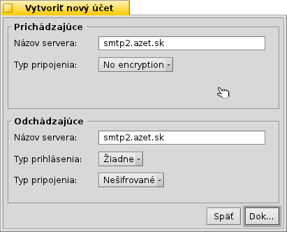
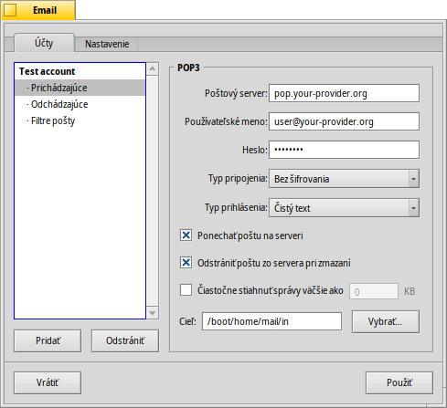
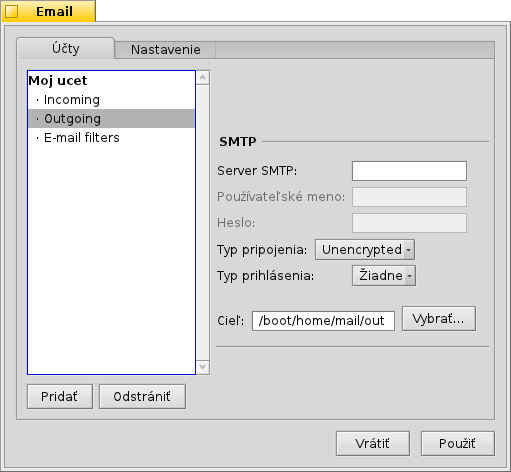
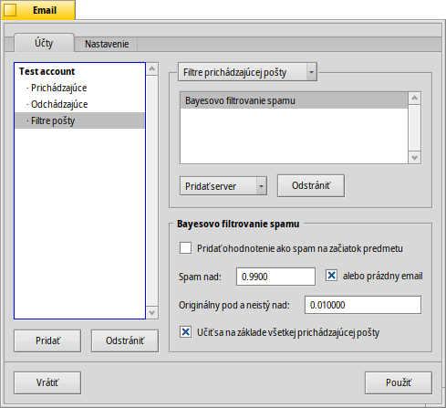
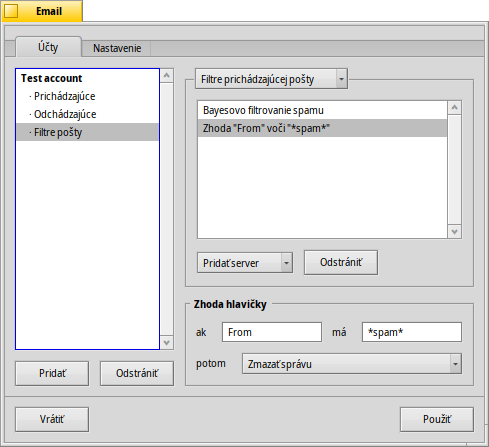
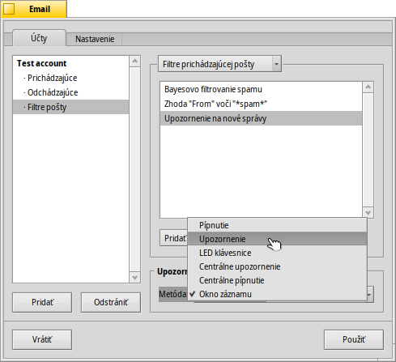
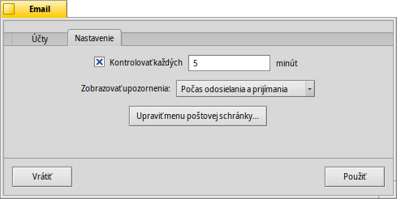
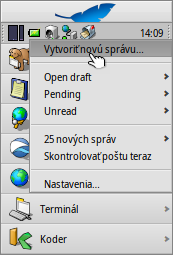

Slovenčina
Slovenčina Français
Français Deutsch
Deutsch Italiano
Italiano Русский
Русский Español
Español Svenska
Svenska 日本語
日本語 Українська
Українська 中文 ［中文］
中文 ［中文］ Português
Português Suomi
Suomi Magyar
Magyar Português (Brazil)
Português (Brazil) English
English| Index |
|
Vytvorenie nového emailového účtu Nastavenia účtu Nastavenie prichádzajúceho e-mailu Nastavenie odchádzajúceho e-mailu Notifikácie a filtre e-mailu Nastavenie poštovej služby |
 E-mail
E-mail
| Panel: | ||
| Umiestnenie: | /boot/system/preferences/E-mail | |
| Nastavenia: | ~/config/settings/Mail/* |
Haiku poskytuje systém, ktorý pravidelne prijíma e-maily cez Poštovú službu (tiež známu ako mail_daemon) a ukladá každú správu ako jeden textový súbor. Analyzuje správu a vypĺňa jej atribúty so všetkými potrebnými hlavičkovými informáciami, ako napríklad Od, Komu, Predmet a stav prečítania správy. Môžete mu posielať požiadavky buď vy osobne alebo akákoľvek aplikácia. Tento systém tiež zjednodušuje prechádzanie medzi e-mailovými klientmi, keďže všetky údaje a nastavenia zostávajú rovnaké.
Nastavenie prebieha cez panel nastavení Email.
 Vytvorenie nového emailového účtu
Vytvorenie nového emailového účtu
Prejdime si proces nastavenia e-mailového účtu.
Začnete kliknutím na tlačidlo , čím vytvoríme nový, nepomenovaný účet. Otvorí sa panel, do ktorého zadáte informácie o svojom účte:
Najprv nastavujete, ako prijímate správy - či cez alebo .
Potom zadajte svoju Emailovú adresu, Prihlasovacie meno a Heslo, uveďte Názov účtu, pod ktorým bude známy v Haiku a vaše Skutočné meno.
Ak je váš účet od jedného z veľkých poskytovateľov e-mailu, Haiku už pozná všetky technické detaily ako napríklad IP adresa servera. Ak to ale nie je váš prípad, kliknutím na otvoríte nové okno, do ktorého treba tieto informácie zadať:
Najprv nastavíte Názov servera, Typ prihlásenia a Typ pripojenia pre prichádzajúce správy, pod tým pre odchádzajúce. Potrebné informácie by ste mali nájsť na webstránke vášho poskytovateľa emailu.
Pozrite nižšie pre viac informácií o rôznych nastaveniach a ďalších možnostiach.
Nastavenia účtu
Vybratím názvu účtu v ľavom zozname môžete meniť niekoľko všeobecných nastavení:

Názov účtu je meno, ktoré sa zobrazuje, napríklad, v zozname účtov v nastaveniach Emailu. Skutočné meno je meno, ktoré ľudia uvidia, keď od vás dostanú správu. Návratová adresa je emailová adresa, ktorá je použitá, keď niekto odpovedá na vašu správu. Zvyčajne je to rovnaká adresa ako tá, z ktorej ste posielali email.
Ak chcete používať emailový účet len na prijímanie alebo len na posielanie správ, môžete (de)aktivovať toto použitie kliknutím pravým tlačidlom na názov účtu v zozname na ľavej strane a nastaviť zaškrtávacie tlačidlá podľa vášho výberu.
Viac o nastavovaní prichádzajúceho e-mailu
Kliknutím na pod názvom vášho účtu nastavíte prijímanie e-mailov.
Prvá je adresa pre prichádzajúce správy. Ak váš poskytovateľ požaduje pripojenie ku konkrétnemu portu, pridajte ho za adresu, oddelený od nej dvojbodkou. Napríklad pop.vas-poskytovatel.sk:1400.
Potom vložíte prihlasovacie údaje, Používateľské meno a Heslo, a ak je to potrebné, zmeňte Typ prihlásenia z prednastavenej autentifikácie na .
Ak používate POP3 a prijímate správy z tohto účtu na viacerých počítačoch, asi budete chcieť aktivovať možnosť a len lokálne.
Ak namiesto toho používate IMAP, máte možnosť lokálne. Môžete špecifikovať pre synchronizáciu len určitých priečinkov a ich podpriečinkov.
Tiež si môžete vybrať určitá veľkosť. Toto stiahne len hlavičku a vy sa môžete rozhodnúť, či chcete stiahnuť zvyšok správy plus možné prílohy potom, ako uvidíte predmet a odosielateľa. Výhodné najmä pre pomalšie pripojenia.
Môžete zmeniť Cieľ vašej schránky prichádzajúcich správ (prednastavený: /boot/home/mail/in/), čo je výhodné, ak chcete oddeliť správy z rôznych účtov do ich vlastných priečinkov. Požiadavky vám však tiež umožňujú triediť správy.
Viac o nastavovaní odchádzajúceho e-mailu
Kliknutím na pod názvom vášho účtu nastavíte odosielanie e-mailov.
Najprv nastavte adresu Servera SMTP pre odchádzajúce správy. Tak isto ako s odchádzajúcimi správami, môžete nastaviť port, ak je potrebný, napr. mail.your-provider.org:1200.
Ak sa potrebujete prihlásiť, zmeňte Typ prihlásenia na a zadajte používateľske meno a heslo, ktoré sú uvedené vyššie. Druhý typ sa používa u poskytovateľov, ktorí potrebujú, aby ste si správy sťahovali cez kvôli identifikácii.
Tak isto ako s prichádzajúcimi správami, môžete zmeniť Cieľ vašej schránky odchádzajúcich správ (prednastavené: /boot/home/mail/out/).
Upozornenia a ostatné filtre e-mailu
Upozornenie na novo prijaté správy a spôsoby ich triedenia a filtrovania nájdete v položke pod názvom účtu. Môžete pridať akýkoľvek počet filtrov, ktoré sa použijú jeden po druhom a zmeniť ich poradie ich pomocou chytenia a ťahania na novú pozíciu.
Momentálne sú tri , ktoré si môžete pridať. Po pridaní filtra na neho musíte kliknúť pre zobrazenie jeho nastavení.
Spamový filter (AGMS Bayesian)

Spamový filter používa štatistické metódy na klasifikovanie správy ako nevyžiadaná pošta. Prideľuje správe hodnotu medzi 0 a 1, takže môžete určiť limit pre normálnu správu a čo bude považované za spam.
Môžete pridať označenie ako spam na začiatok predmetu správy.
Spamový filter sa tiež dokáže učiť zo všetkých prichádzajúcich správ. Samozrejme, budete ho to musieť naučiť vytriedením správ nesprávne uvedených ako spam. Dozviete sa o tom viac, keď budeme preberať aplikáciu Pošta.
Spolu s nasledujúcim môžete automaticky vytriediť objavené nevyžiadané správy.
Filter pravidiel

Tento filter porovnáva hlavičku správy s vyhľadávacím vzorom a vykonáva určité operácie podľa pravidiel, ktoré si nastavíte.
Prvým textovým poľom určujete, ktoré hlavičky sa majú kontrolovať. Dostupné sú tieto:
| meno odosielateľa | ||
| e-mailová adresa odosielateľa | ||
| vaša e-mailová adresa (odlišná pre každý účet) | ||
| adresa, na ktorú sú posielané odpovede | ||
| dátum a čas prijatia správy | ||
| predmet správy | ||
| adresy kohokoľvek, kto dostane „Skrytú kópiu“ (Cc) | ||
| názov účtu | ||
| Aktuálny stav správy. Zvyčajne to môže byť „Prečítaná“, „Poslaná odpoveď“, „Odoslaná“, „Preposlaná“, „Nová“, alebo čokoľvek, čo ste si sami definovali. Ale, ak to sami nezmeníte vo filtri, vždy to bude „Nová“ potom, ako Poštová služba správu prijme. | ||
| nastavuje ju e-mailový program odosielateľa (napr. „urgentné“) | ||
| v podstate to isté ako „Predmet“, ale bez vecí ako Re: alebo Fwd: | ||
| na základe toho, ako spamový filter správu klasifikoval, bude buď prázdna (ak si nie je istý) alebo bude obsahovať slovo „Pravá“ alebo „Spam“ | ||
| Toto je číselné ohodnotenie, ktoré spamový filter pridelil správe. Sú zobrazené vo vedeckej notácii, kde 1.065e-1 znamená 1.065 vydelená 10 umocnenými na 12-tu, čo v tomto prípade znamená 0.000000000001065. |
Druhé textové pole obsahuje vyhľadávací vzor. Prijíma regulárne výrazy, ktoré prinášajú veľkú flexibilitu, aj keď nanešťastie trochu veci komplikujú. Prečítajte si o nich niečo, stojí to za to a jednoduché vyhľadávacie vzory nie sú až také komplikované.
S použitím vysúvacieho menu pod tým, pridelíte akciu, ktorá sa má vykonať, keď vzor pasuje. Môžete presunúť alebo vymazať správu, nastaviť status na "Prečítaná" alebo čokoľvek iné, alebo nastaviť účet s ktorým odpoviete.
Upozornenie na nové správy

Existuje niekoľko možností, ktoré si môžete vybrať, ako byť informovaný o novo prijatej pošte. Pod menu môžete nájsť niekoľko možností, ktoré sa dajú tiež kombinovať:
| Žiadne upozornenia. | ||
| Prehrá zvukový súbor pridelený udalosti „Nový E-mail“ v nastaveniach Zvuky pri každej novej správe. | ||
| Zobrazí upozornenie na každú novú správu. | ||
| Bliká niektorými LEDkami, ako napríklad indikátor caps-lock | ||
| Zobrazí jedno okno s upozornením pre všetky nové správy. | ||
| Prehrá zvukový súbor priradený udalosti „Nový E-mail“ v nastaveniach Zvuky, len raz pri nových správach. | ||
| Zobrazí okno záznamu. |
Filtre odchádzajúcich správ
Momentálne je pre odchádzajúce správy dostupný len jeden filter: fortune.
Priloží k správe náhodne vybratú vtipnú alebo múdru hlášku zo súboru tzv. „koláčikov pre šťastie“ na koniec každej správy predtým, ako je odoslaná. Môžete si pozrieť ako približne tieto hlášky vyzerajú, spustením príkazu fortune v Termináli.
Nastavenie Poštovej Služby
Takže teraz, keď ste si nastavili servery (a možno aj zopár filtrov) pre prichádzajúcu aj odchádzajúcu poštu, musíte povedať Poštovej službe, ktorá v skutočnosti vykonáva kontrolu a získavanie nových správ, ako má vykonávať svoju robotu.
Pod Kontrola pošty nastavujete interval, v akom sa kontrolujú nové správy na serveri.
Ak ste na vytáčanom spojení, budete to asi chcieť robiť a tiež , aby ste zabránili pravidelnému vytáčaniu len kvôli skontrolovaniu e-mailu.
Poštová služba má okno so stavom, ktoré môžete nastaviť, aby sa zobrazovalo , , alebo .
Uistite sa, že je začiarknuté alebo nebude bežať mail_daemon, ktorý by vaše požiadavky plnil...
otvorí priečinok /boot/home/config/Mail/Menu Links/. Všetky priečinky alebo požiadavky (!) alebo ich odkazy v tomto priečinku sa zjavia v kontextovom menu ikony schránky Poštovej služby v Paneli.
Z toho menu môžete tiež , alebo upraviť .
Ak podržíte stlačený kláves SHIFT počas otvárania kontextového menu, dostanete ďalšie príkazy:
| Poskytuje podmenu pre kontrolu pošty len pre jeden konkrétny účet. | ||
| Dovoľuje vám odoslať čakajúce správy bez toho, aby sa zároveň kontrolovali aj nové správy. | ||
| Ukončí celú emailovú infraštruktúru (mail_daemon). |
Ikona schránky zobrazuje, či sú v schránke neprečítané správy (so stavom „Nová“), keď obsahuje obálky.